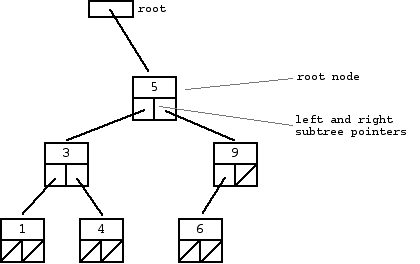

T13 - JavaScript: Closures and Callbacks
8/5/15
// ------------ Example 1.0 ---------------- // ---- Basic callback architecture ---- // In JavaScript you can pass functions as parameters. // Callback - A function that is passed into another high-order function. function highOrderFunction(params) { console.log(params) } var callbackFunction = function() { return "This is from the 'callbackFunction'" } highOrderFunction(callbackFunction()) // ------------ Example 1.1 ---------------- // Callbacks and closures - usually used with event listeners function highOrderFunction(city, callback) { console.log("This is from the 'highOrderFunction'") callback(city) } var callbackFunction = function(city) { console.log("This is from the 'callbackFunction'") console.log("I live in: " + city) } highOrderFunction("Detroit", callbackFunction)
// ------------ Example 1.0 ---------------- // ---- Basic closure architecture ---- // Closure - A function that keeps reference to variables from its parent's scope, even after the parent has returned. function parent(num) { var ans = num * num // console.log(ans) return function child() { console.log(ans) } // return child // This is another way of making a closure - it returns the function, not the results of the function like "return child()" would } var num = 3 var closure_example = parent(num) // This sets up the closure // parent(num)() // This also calls child() but is not a closure closure_example() // This returns 9 (num * num) // ------------ Example 1.1 ---------------- var closure_example2 = parent(num + 2) closure_example2() // This returns 25 ((num + 2) *(num + 2)) // ------------ Example 2.0 ---------------- // ---- Closure variables can be dynamically set ---- function cityLocation() { var city = "Paris" // Not usually accessible outside of the function return { get: function() { console.log(city) }, set: function(newCity) { city = newCity } // This allows us to change the value of "city" outside of the function } } var myLocation = cityLocation() myLocation.get() // This returns "Paris" myLocation.set("Munic") // Changes the value of city to "Munic" myLocation.get() // This returns "Munic"
An understanding of linked lists and nodes is recommended before making attempts to comprehend the following material.
What is a Binary Tree?
As noted by a paper on binary trees by Standford, "The formal recursive definition is: a binary tree is either empty (represented by a null pointer), or is made of a single node, where the left and right pointers (recursive definition ahead) each point to a binary tree." A binary tree is a pretty much just complex connection of linked lists. They are usually visually represented as an upside-down tree-like thing (think org chart or family tree). Binary trees are composed of a "root" node which points to the start (topmost) node of the tree. Each subsequent left and right pointers of each node recursively point to additional nodes which represent subtrees (just look at the picture below if that was hard to take in). These subtrees are called "branches." The final nodes in the tree, which possess no more nodes "beneath" them are denoted as the "leaves." If it wasn't obvious before, leaves have NULL pointers. Binary trees are a good general purpose data structure. They are a jack-of-all-trades, not great nor terrible but okay for most functions that need to be performed on a set of data (e.g. lookups, inserts, deletes, etc). The height of a binary tree can be derived from the maximum branch length. The tree below has a height of 3 because its longest branch has a length of 3 (in this example the two main branches both have a length of 3). The size of a binary tree is found by counting the number of nodes that are contained by the tree. The example below has a size of 6. 
Ordered Binary Tree
Every single node on a binary tree will consist of three things: a value, a link to the node's left subtree, and a link to the node's right subtree. An ordered binary tree is sorted with the following logic: each node has a child node that is less than or equal to it's own value on it's left and a second child node that is greater than or equal to it's own value on it's right. The above binary tree is ordered in this manner. An unbalanced binary tree is one in which the above logic is not properly applied.
The Cost of Binary Trees and Their Common Uses
The cost of using an ordered binary tree with N nodes is log(N)*(log base 2). Binary trees are used in many applications including:- Search functions performed on map and set objects found in many programming language libraries,
- Binary space partitioning which helps video game engines determine which objects must be rendered,
- Binary tries which are used in storing routing tables for network routers,
- Heaps for efficient priority queues which are used for managing processes in many OSs,
- And many more.
The Lookup Function
Lookups are used to find a specific value in a binary tree. They are usually performed recursively on a binary tree with a base case of an empty tree/node (NULL pointers). Until the base case is met (in which case the sought after value is not in the tree) or until the sought after value is found, the algorithm will search each node in a breadth-first manner per node. If the tree is sorted, the algorithm will look to the left and right nodes attached to the current node to compare their values (left is always less than or equal to the current node and right is always greater than or equal to the current node).
The Insert Function
We will probably want to add new values to a tree over time, but if the tree is already sorted we will need to add the value to the correct location. We will have to create a new node, adding the value at the end of the tree and then re-sort the tree.
References and Continued Study
Pointers and Memory Linked List Basics Binary TreesWant to work with me?
I'm currently taking on new projects and looking for a job. Please contact me if you would like to work together.


© 2015 Phil Borel. All rights reserved.